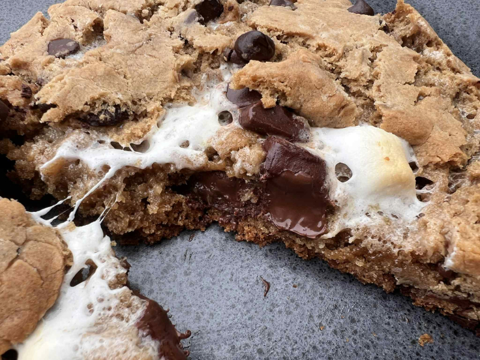

Lava S’mores Cookies
Description
These bakery-style cookies are thick, chewy, and packed with the gooey goodness of melted marshmallows, rich chocolate, and graham cracker crumbs. Inspired by Levain Bakery, but with a s’mores twist.
Ingredients
Dough (makes 4 large cookies)
- 1 lb cookie dough (or use homemade version below)
- ¾ cup graham cracker crumbs (about 5 full crackers)
- 1 cup semisweet chocolate chunks
Homemade Dough Base (if making from scratch)
- 1 cup cold unsalted butter, cubed
- ¾ cup brown sugar
- ½ cup granulated sugar
- 2 large eggs
- 2¾ cups all-purpose flour
- 1 tsp baking powder
- ½ tsp baking soda
- ½ tsp salt
Filling (per cookie)
- 2–3 large marshmallows or 1 tablespoon marshmallow fluff
- 1–2 semisweet chocolate squares
Instructions
- If making homemade dough: Cream butter and sugars together until fluffy. Add eggs and beat until combined.
- Add flour, baking powder, baking soda, and salt. Mix until just combined.
- Stir in graham cracker crumbs and chocolate chunks.
- Divide the dough into 4 equal portions (~4 oz each). Flatten each into a disk.
- Place marshmallows and chocolate in the center of each disk. Wrap the dough around the filling and seal it completely. Form into a ball.
- Freeze for at least 12 hour to maintain thickness during baking.
- Preheat oven to 400°F (205°C). Place cookies on a parchment-lined baking sheet.
- Bake for 10–13 minutes, or until the edges are golden brown and centers are still soft.
- Let cool for 5–10 minutes before serving. Best enjoyed warm for ultimate gooeyness!
Tips
- Use marshmallow fluff for an even meltier center.
- Top with flaky sea salt for contrast.
- Make ahead and freeze dough balls for fresh-baked lava cookies anytime!